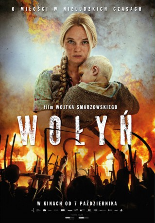

#10817 Sommer 1943 - Das Ende der Unschuld
 
 IMDB-Wertung: 7.7 / 10
IMDB-Wertung: 7.7 / 10  Metascore: 0
Metascore: 0 
Despite being in love with a Ukrainian boy from the same village, Polish girl named Zosia is forced into marrying a wealthy widower. Soon World War II begins and ethnic tensions arise. Amidst the war chaos Zosia tries to survive.
Jahr: 2016
Dauer: 143 Minuten
FSK: 16
Land: Polen Studio: Tiberius FilmTonspuren:
Untertitel: Deutsch,
Auflösung: 1080p (1920x808) Größe: 7546 MB
Genre: Drama, Krieg, Geschichte
Regisseur: Wojciech Smarzowski
Drehbuch: Wojciech Smarzowski
Soundtrack: Mikolaj Trzaska
Darsteller:
- Michalina Labacz als Zosia Glowacka
- Arkadiusz Jakubik als Maciej Skiba
- Wasyl Wasylik als Petro
- Adrian Zaremba als Antek Wilk
- Izabela Kuna als Glowacka
- Jacek Braciak als Glowacki
- Lech Dyblik als Hawryluk
- Gabriela Muskala als Bronka
- Tomasz Sapryk als Izaak Menzl
- Jerzy Rogalski als Wincenty Kwiatkowski
- Nina Antonova als Babulina
- Magdalena Celówna-Janikowska als Old Jurczakowa
- Janusz Chabior als Priest Józef
- Ireneusz Czop als Priest Adam
- Jaroslaw Gruda als Lisowski
- Eryk Lubos als Zajdel
- Piotr Nowak als Szewczuk
- Filip Plawiak als Zygmunt Krzemieniecki
- Georgiy Povolotskiy als Miller
- Vitalii Salii als Orthodox priest (1943)
- Gera Sandler als Old Jew
- Sebastian Stegmann als Niemiec
- Dariusz Toczek als Wiliusz
- Boris Tryus als Greek Catholic priest (1943)
- Robert Wabich als
- Zbigniew Walerys als Old Ukrainian
- Wojciech Zielinski als Chmura
- Marcel Hugh Kaczynski als Zolnierz (uncredited)
- Maria Sobocinska als Helena Glowacka-Huk
- Oleksandr Zbarazkyi als Vasyl Huk
- Volodymyr Protsiuk als Orlyk
- Oleksandr Chesherov als Mykola
- Roman Skorovskiy als Stiepan Szuma
- Zacharjasz Muszynski als Bohdan
- Michal Gadomski als Jurny Jurczak
- Andrzej Popiel als Romek Glowacki, brat Zosi
- Marcin Sztabinski als Staszek Kwiatkowski
- Iryna Skladan als Olga Hapyna
- Oles Fedorchenko als Iwan Huk
- Jan Aleksandrowicz als Soviet partisan
- Jan Anisiewicz als
- Serhiy Bachyk als Andrij
- Michalina Bartnik als
- Magdalena Bialas als
- Maria Bikont als
- Kacper Burda als Hryc Horubala
- Lyudmyla Chesherova als
- Katarzyna Chlebny als
- Jakub Chochrek als
- Radoslaw Czopek als
Datei: X:\2016(N-Z)\Sommer 1943 - Das Ende der Unschuld (2016, FSK16, 1920x808).mkv seit 09.03.2019
Festplatte: HD 2016(A-Z)
 Es gibt insgesamt 182 Filme in der Gruppe '2016(N-Z)'
Es gibt insgesamt 182 Filme in der Gruppe '2016(N-Z)'